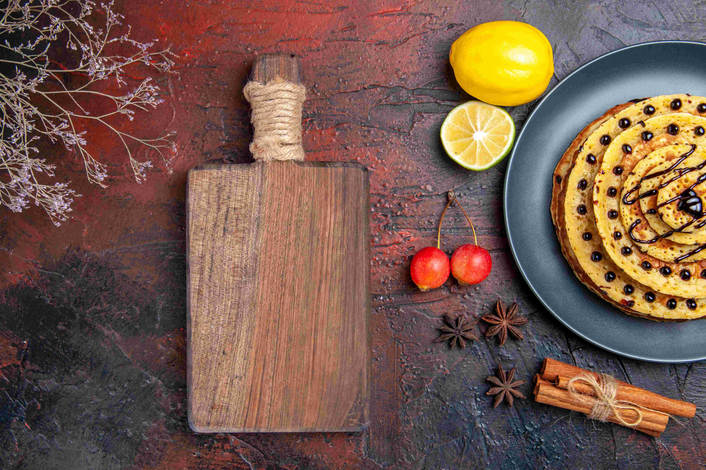

<div class="content">
    <div class="content-inner">
                <div class="image">
                    <div class="blur">
                        
                    </div>
                    
                </div>
        <div class="container">
            <div class="contact-me">
                <h2>КУЛИНАРЕН БЛОГ</h2>
            </div>
                <section class="info">
                    <h2>С НЯКОЛКО ДУМИ ЗА МОЯТ БЛОГ</h2>
                </section>
                <section class="my-reason">
                    <div class="first-section">
                        <p>Преди време реших да създам блог за кулинарни рецепти. Така започна TastyCreations, моят вкусен и разнообразен кулинарен свят.</p>
                        <p>Кулинарията е не просто хоби за мен, а по-скоро начин на живот, който прониква във всекидневието ми и го прави по-вкусно и уютно. За мен, този кулинарен свят представлява повече от просто приготвяне на ястия - това е израз на творчество, страст и начин да споделям радостта от добрата храна с близките си.</p>
                        <p>Готвенето не е просто процес на смесване на съставки и прилагане на техники. То е изкуство, което ме вдъхновява да експериментирам, да създавам и да изразявам своята индивидуалност чрез храната. Откривам удоволствие в търсенето на нови рецепти, в съчетаването на различни вкусове и в приготвянето на ястия, които не само галят вкусовите бутони, но и създават усещане за топлина и уюта.</p>
                        <p>Създаването на храна за мен е нещо повече от задача, това е начин за изразяване на любов и внимание към хората около мен. Гостите в моя дом не просто ядат, те преживяват уникално пътешествие в света на вкусовете, което аз с удоволствие им предоставям.</p>
                    </div>
                    <div class="second-section">
                        <p>Сериозността към готвенето ми се отразява и в желанието ми за постоянно усъвършенстване. Търся нови техники, екзотични съставки и вдъхновяващи кулинарни тенденции, за да обогатя моите ястия и да предизвикам вкусовете на тези, които ги опитват.</p>
                        <p>Кулинарията е моят живот, защото в нея намирам радост, творчество и начин да направя света по-красив и вкусен. Тя не просто задоволява глада, но и създава специални моменти, запечатани с аромати и вкусове, които запомняме и обичаме.</p>
                        <p>Можете да се регистрирате...
                            И тъй като разбирам, че хората не обичат да го правят, реших да ви стимулирам по няколко начина.</p>
                        <p>Всеки, който се регистрира, може да създаде личен профил и да състави своята кулинарна книга, базирана на съдържанието на сайта, което улеснява бързото намиране на любимите рецепти.</p>
                        <p>TastyCreations - моят вкусен и разнообразен кулинарен свят звучи страхотно...</p>
                        <p>Не на последно място, регистрираните потребители могат да споделят свой собствени рецепти.</p>
                        <p>Приятно готвене в моят вкусен и разнообразен кулинарен свят!</p>
                    </div>
                </section>
            </div>
        </div>
</div>

